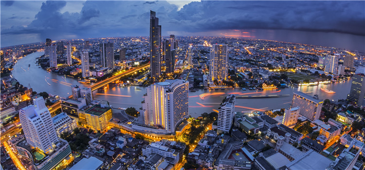
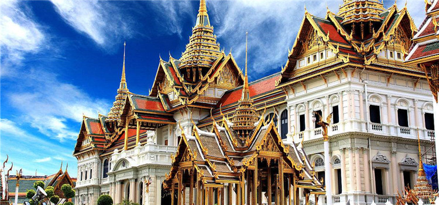

#高空俯瞰，享曼谷全景#
自从好莱坞电影《宿醉2》在曼谷取景播出后，曼谷各种高空餐厅和高空酒吧成为游客最想体验的场所。在顶层用餐，视野开阔，能俯瞰到曼谷整个城市的建筑风格和特色景点，尤其是夜晚，顶层阵阵凉风，配合着情调音乐，欣赏着湄南河夜景，小酌一杯，实在是番特别的享受。
Sirocco Sky Bar位于曼谷的老城区，酒吧的布景本身也是一种风景，在露天bar俯瞰曼谷夜景，能够看到点点灯光中流淌着的如丝带般的湄南河，让人陶醉其中。
电话：+66-2-6249555

图：曼谷的夜景
地址：1055/42 Silom Road, Silom,Bangrak State Tower 63rd Floor, The Dome at Lebua, Bangkok
#穿梭佛寺间，虔诚拜佛#
曼谷拥有大大小小近500座寺庙，是名副其实的“佛城”。这些寺庙的建筑风格各异，每一座寺庙都有自己的故事和历史。最有名的寺庙几乎都集中在曼谷的老城区，大皇宫里的玉佛寺、唐人街的金山寺、湄南河畔的郑王庙、卧佛寺大佛、久负盛名的四面佛都能带给游客不同的感受，花半天时间游览寺庙，虔诚的许吧。

图：曼谷大皇宫的金碧辉煌
#乘摩天轮观湄南河晚霞#
谁说日出日落是海岛的专利？城市的日落也别有风情。曼谷河滨夜市的摩天轮已经成为湄南河畔的新地标，成为曼谷当地人和游客夜间游玩的好去处。这个夜市相对其他夜市来说更加现代时尚，尤其是傍晚时分，乘坐摩天轮，从不同的角度观赏整个河边的建筑被笼罩在落日余晖中，美艳动人。
湄南河最美的景色就是傍晚，白天的景色相对逊色，如果来体验，一定选择下午哦。摩天轮夜市上午基本不开门，最热闹的时候是晚上，有免费的摆渡船。
电话：+66-02-1884488

图：湄南河边的日落晚霞
地址：2194 Charoenkrung Road, Wat Phraya Krai, Bang Kho Laem, Bangkok
#近距离接触“人妖”明星#
到曼谷，怎么能错过人妖秀？毫不夸张的说，很多游客来到泰国就是为了一睹人妖的风采。近年来，中国电影里也出现了人妖的身影，看着他们比女人还妖娆的身段、娇羞姿态和热辣舞姿，让人想揭开他们的神秘面纱。
《泰囧》里的人妖Rose就是曼谷金东尼人妖秀场里的演员，可以近距离接触“电影明星”哦。
电话：+66-02-6928202
图：曼谷金东尼人妖表演
地址：252/5 soi 18, Ratchadapisek, Huai Khwang, Bangkok
#玩转不同的购物体验#
在曼谷，购物是一项绝对不可以错过的体验，相对香港来说，有更吸引人的价格和更丰富的种类，让游客们欲罢不能。
无论你喜欢高档奢华的奢侈品牌、还是极具本土特色的个性风格，又或是特色集市带给的与众不同的感受，在曼谷通通可以满足。亚洲最大的周末市场Chaduchak是淘宝的好去处、曼谷中区的高大上绝不会让你空手而归，曼谷周边的“铁道市场”和“水上市场”都能让你在购物中享受乐趣。
小贴士：曼谷市集众多，大部分市集只接受现金。
图：曼谷购物中心区域，彼此相连的ZEN、Central World商场
地址：Thanon Kamphaeng Phet, Chatuchak, Bangkok